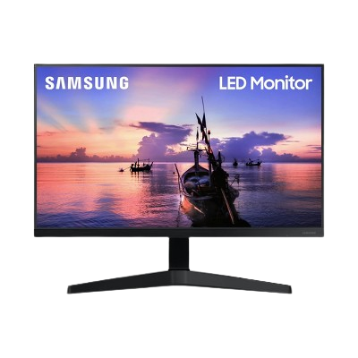

Spesifikasi Monitor

|
Keunggulan |
- TV dengan sistem operasi Android
- Streaming video langsung di TV tanpa hp dan PC
- Cevo Engine Premium, menganalisa dan mengatur kualitas gambar
- Gambar lebih detail dan mendalam dengan resolusi HD
- BrightOn, hasilkan rentang kecerahan lebih luas
- Bisa tangkap siaran TV Digital (DVB-T/T2/C dan DVB-S/S2)
- Dibekali port USB untuk putar video dari Flashdisk
- Audio didukung Dolby Digital.
|
Harga |
Rp 3.178.000 |
Input / Output |
- Input Antenna 1: DVB-T/T2/C
- Input Antenna 2: DVB-S/S2
- Input EXT 1: Mini AV Input
- Input EXT 2: HDMI 1
- Input EXT 3: HDMI 2 ( ARC )
- Input EXT 4: HDMI 3
- Input Digital: USB 2.0 x 2 + LAN
- Wireless LAN: Built-in
- Output Audio: Fixed (3.5mm Jack) shared with earphone + Digital
|
Konsumsi Daya |
150 Watt |
Dimensi Produk |
Without Stand:730 x 443 x 73 mm, With Stand: 730 x 478 x 186 mm (WxHxD) |
Speaker |
2 x 8W |
Ukuran Layar |
32 Inch |
Voltase |
100 - 240V AC, 50/60Hz |
Tipe Layar |
LED |
Audio |
- Dolby Digital ; DTS
- Sound Mode: Standard,vivid, Music, Sports, moive,news
|
Resolusi Layar |
1366 x 768 |
|
|